▶
Edición de video
Reels, cortometrajes, clips y montaje audiovisual.
CREADOR MULTIMEDIA · VIDEO · FOTOGRAFÍA · DISEÑO
Transformo ideas en fotografías, videos e historias visuales. Exploro la fotografía, la edición de video, el diseño gráfico y la producción audiovisual para contar historias con estilo propio.
LO QUE HAGO
Reels, cortometrajes, clips y montaje audiovisual.
Retratos, composición, iluminación y retoque.
Identidad visual, afiches y contenido para redes.
Conceptos, guiones, grabación y narrativa visual.
SOBRE MÍ
Soy RSEC, un creativo enfocado en el mundo multimedia. Me gusta experimentar con la cámara, la edición y el diseño para transformar ideas en proyectos visuales que comuniquen y conecten. Este espacio reúne mis trabajos de fotografía, video, diseño gráfico y producción audiovisual.
MI CAJA DE HERRAMIENTAS
PORTAFOLIO
Filtra por categoría. Abre una tarjeta para ver fotografías, documentos o reproducir el video sin salir de la página.
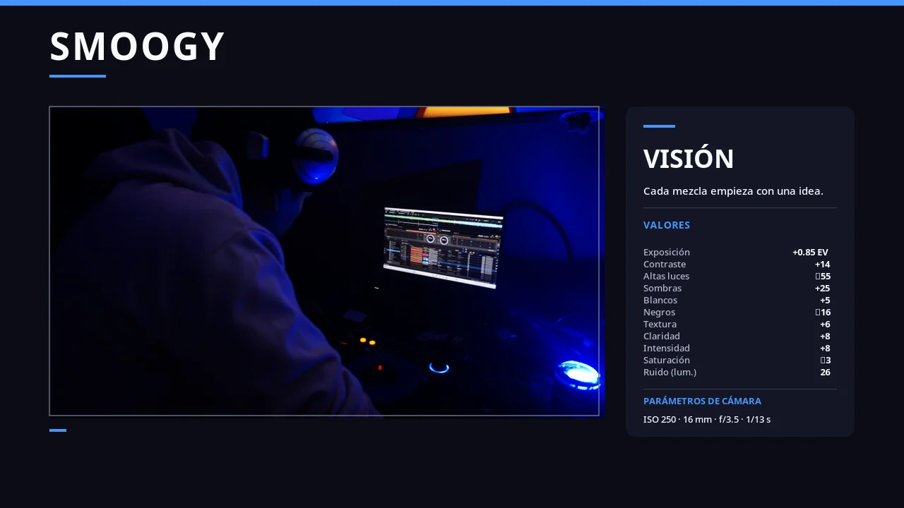
FotografíaSerie de cinco fotografías con selección, tratamiento de color y parámetros de cámara.
Composición publicitaria para redes sociales con fotografía de producto y jerarquía tipográfica.
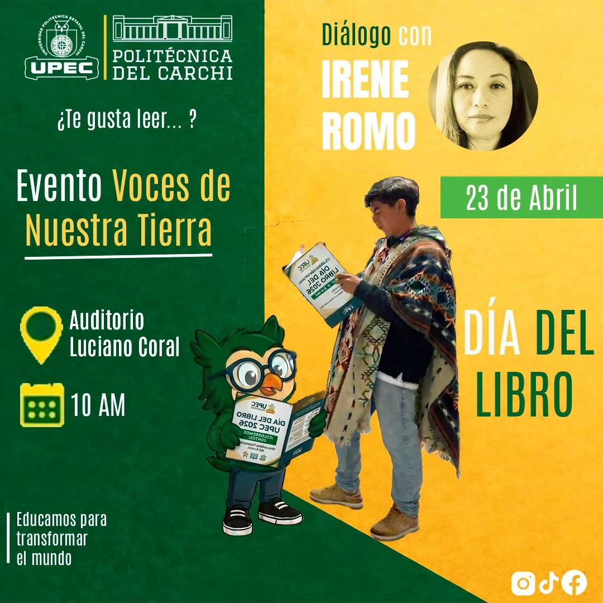
DiseñoPieza promocional para una actividad por el Día del Libro en la UPEC.
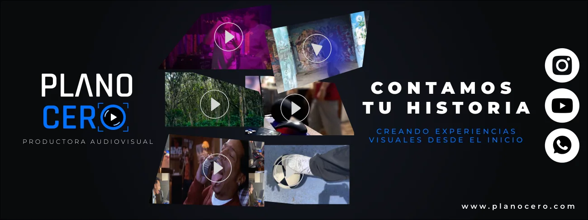
DiseñoDos aplicaciones gráficas para una productora audiovisual: afiche vertical y banner digital.
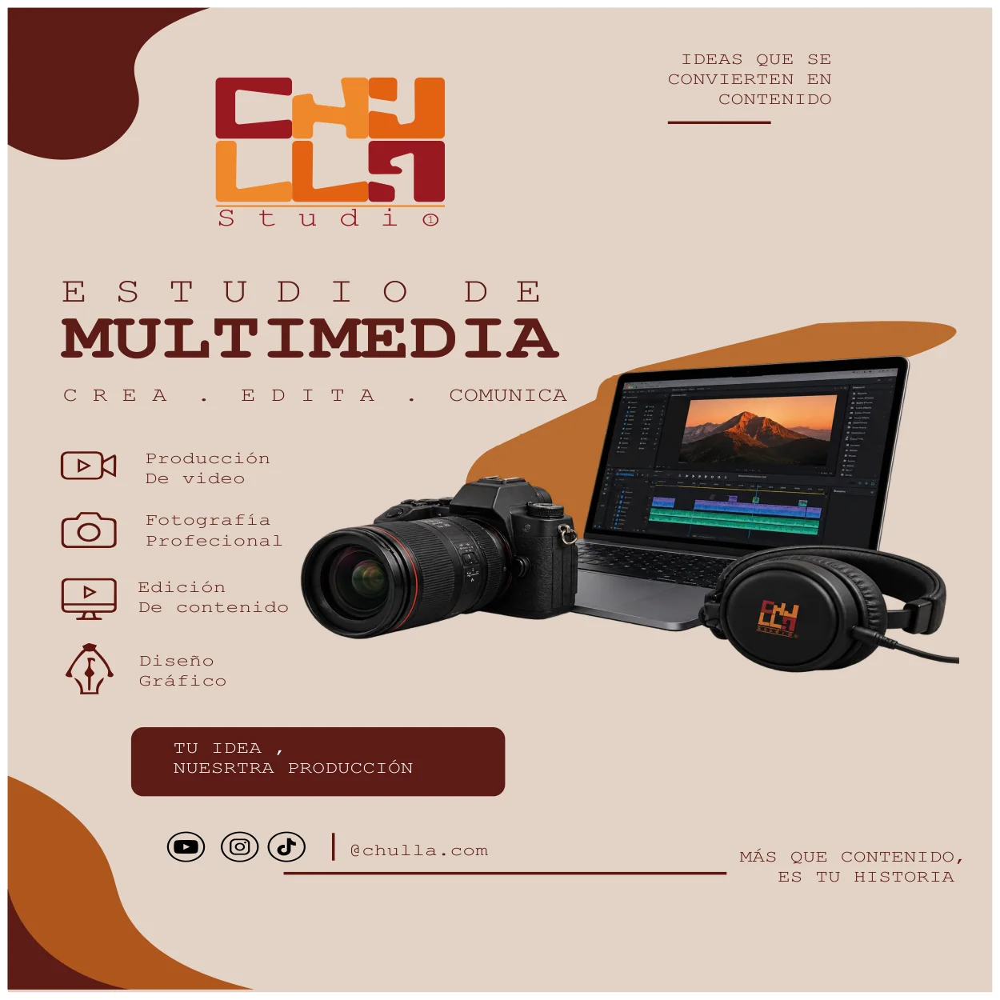
DiseñoPropuesta de marca y aplicaciones: piezas editoriales, anuncios e ilustraciones.
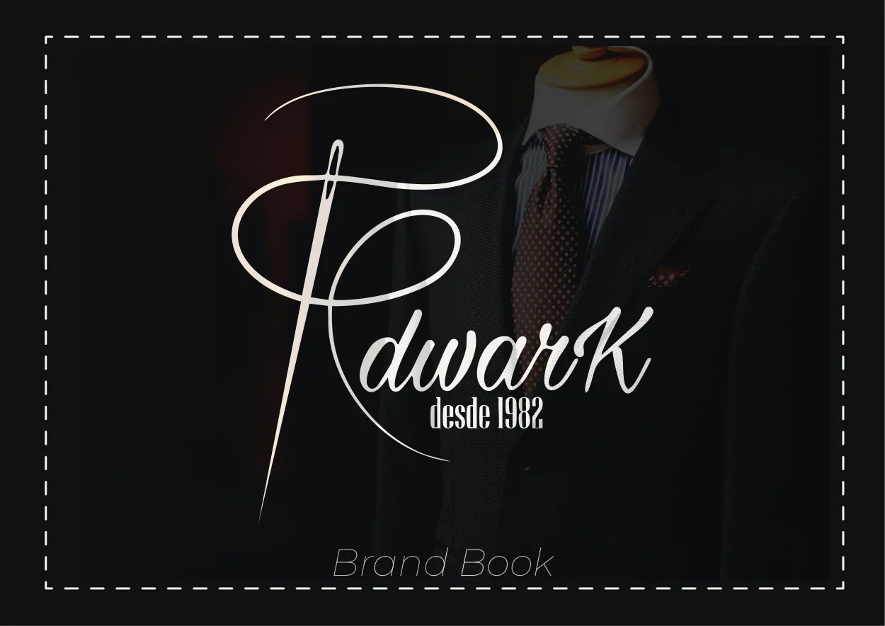
DiseñoIdentidad de una sastrería: logotipo, paleta, retícula, aplicaciones y mockups.
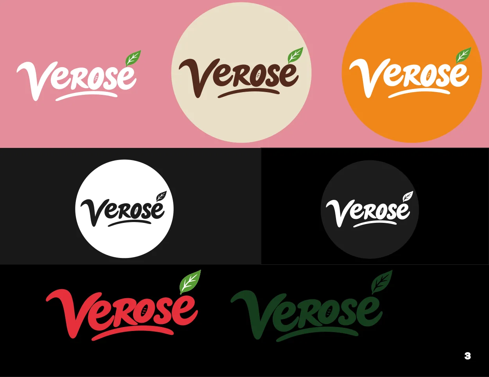
DiseñoSistema visual de marca con variantes cromáticas, patrones y presentaciones de producto.
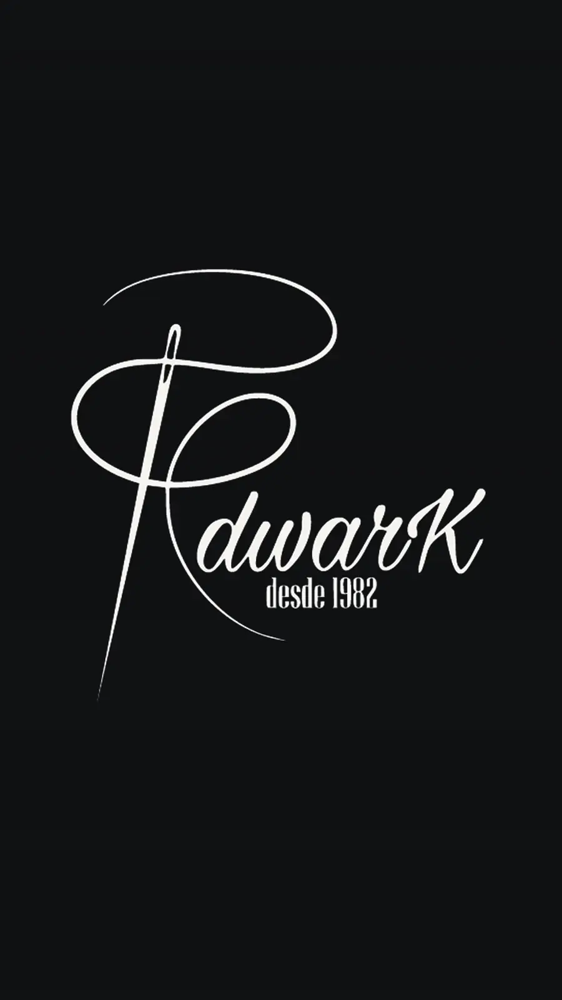
VideoMotion graphic: construcción y revelado de la firma de Edwark.
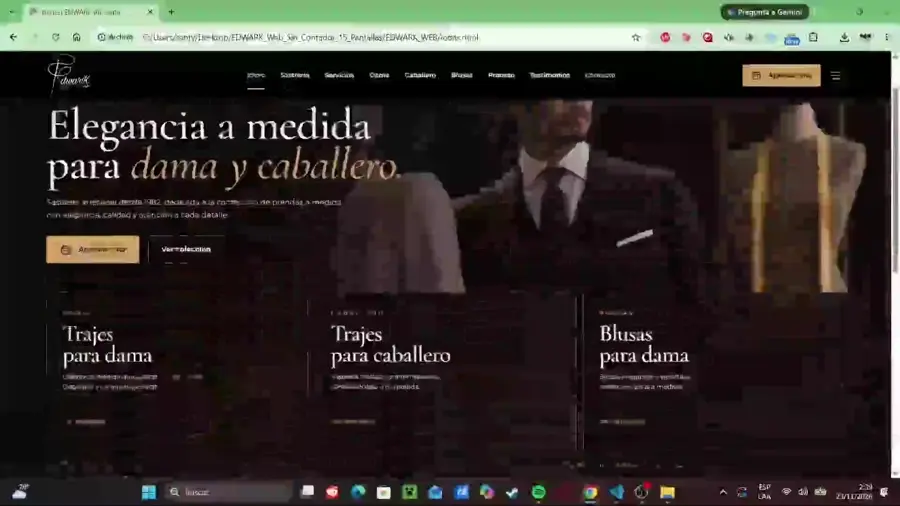
VideoGrabación de un recorrido por un prototipo funcional de la marca.
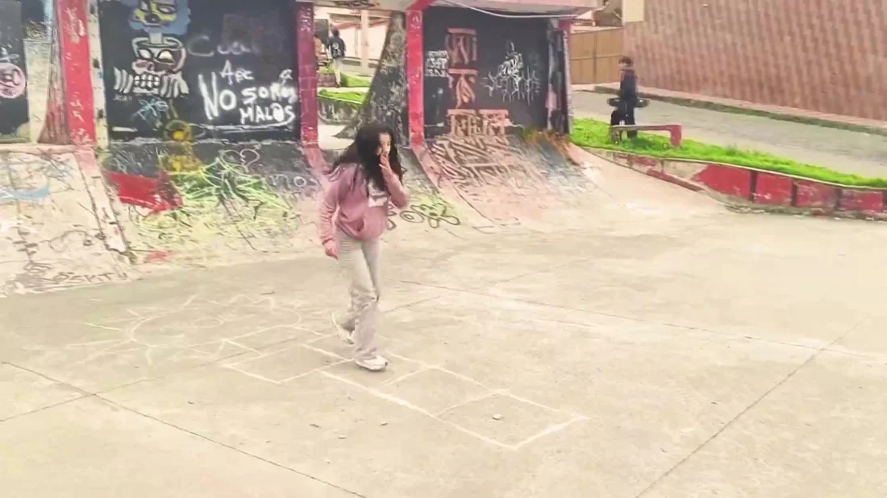
VideoPieza audiovisual de aproximadamente 1 minuto y 40 segundos con escenas de un espacio urbano.
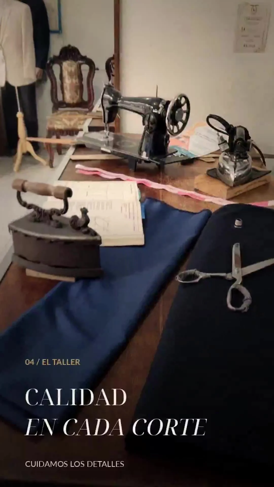
VideoVideo promocional vertical de 18 segundos que muestra detalles de confección y sastrería.
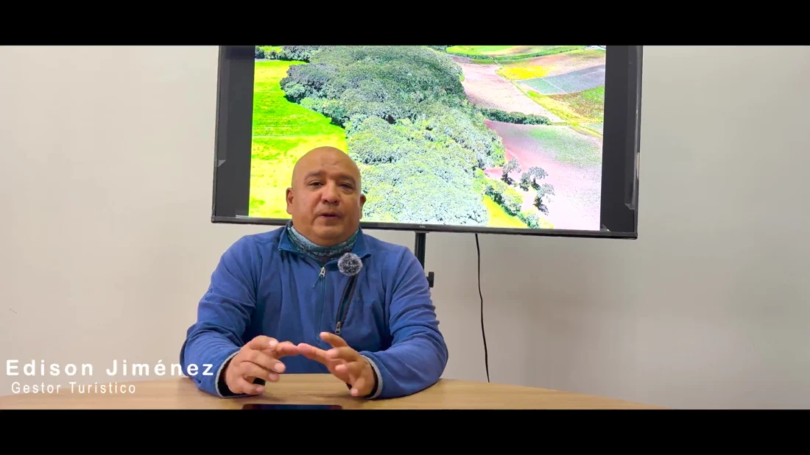
VideoProducción documental con entrevistas, paisajes y montaje audiovisual.
No se encontraron proyectos.
CONTACTO
Ya sea un video, una sesión de fotos, una marca o una producción audiovisual, cuéntame tu idea.
Serie de cinco fotografías con selección, color y parámetros de cámara.
Composición publicitaria para redes sociales con fotografía de producto y jerarquía tipográfica.
Pieza promocional para una actividad por el Día del Libro en la UPEC.
Dos aplicaciones gráficas para una productora audiovisual: afiche vertical y banner digital.
Propuesta de marca y aplicaciones: piezas editoriales, anuncios e ilustraciones.
Identidad de una sastrería: logotipo, paleta, retícula, aplicaciones y mockups.
Sistema visual de marca con variantes cromáticas, patrones y presentaciones de producto.
Motion graphic: construcción y revelado del logotipo de Edwark.
Grabación de un recorrido por un prototipo funcional de la marca.
Pieza audiovisual de aproximadamente 1 minuto y 40 segundos con escenas de un espacio urbano.
Video promocional vertical de 18 segundos que muestra detalles de confección y sastrería.
Producción documental con entrevistas, paisajes y montaje audiovisual.